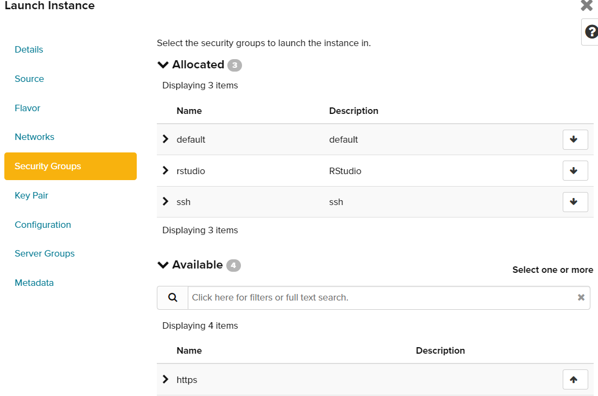

Sipping Nectar: A Guide to Setting Up Your RStudio Server on a Supercomputer
Introduction
The purpose of this tutorial is to guide you through the process of setting up an Rstudio session on Nectar. This tutorial provides a simplified and condensed version of the resources available at https://tutorials.rc.nectar.org.au. If you wish to explore more advanced features beyond what is covered in this tutorial, please feel free to visit the Nectar website.
There are several benefits to using a remote Rstudio server. First, it allows for increased flexibility, as you can access your R environment from anywhere with an internet connection. This means that you can work on projects from home, the office, or on the go. Second, a remote server can be much more powerful than a local machine, as it can leverage the resources of the cloud to handle complex analyses and large datasets. Finally, it can be more secure, as the server can be configured with specific security measures to protect your data.
Navigating Nectar in 5 Steps
To get started, go to https://dashboard.rc.nectar.org.au/ and log in via AAF. Next, locate your organization (in this case, the University of Tasmania) and connect to your dashboard.
If you are connecting to Nectar for the first time, you will be allocated a project with limited resources (e.g., a few VCPUs and RAM) for a limited time, to help you get started.
If you need more resources, you will need to apply for them by submitting an application or being added to an existing project. Keep in mind that approval of resource requests may take some time, depending on the volume of applications being processed. Once you have access to your resources, you can proceed with setting up your Rstudio session using the instructions provided in this tutorial.
Application for resources
TODO
Once you have resources available in your project, you can start creating instances. If you have access to multiple projects, these can be selected in the top left corner in blue.
Security setup
On the side in “Project/Compute/Overview”, you can easily monitor the resources available to create instances. This section displays important details such as the number of instances you can create (you can have more than one per project), the number of VCPUs available (also known as the number of cores), and the amount of RAM that each instance has access to (also known as memory).

The overview section is also useful for checking other details related to your project, such as the amount of storage available or networks in use. Keep in mind that the information displayed in the overview may vary depending on the type and size of your project, so it’s important to review this section carefully before launching your instance to ensure you have the resources you need. You can use this information to determine how many instances you can create and what size they should be to best fit your needs.
Security groups
Security groups provide network access to your instances. We will configure two security groups for ease of use. You can view existing security groups in the Network/Security Groups section.

We will create a security group to connect via SSH and another to connect directly to Rstudio via a browser. If these groups already exist, you can skip the following section.
To create a new security group, click on the “Create Security Group” button. You will be prompted to enter a name and an optional description for the new security group. After clicking “Create Security Group,” you will be able to edit the group’s rules.
For SSH, we will add an ingress rule that is already pre-configured. Click on “Add New Rule” and select SSH in the first dropdown menu.

The rest of the fields will be automatically filled, so just click “Add” to create a new security group for configuring the SSH connection.
For Rstudio, we will add a custom ingress rule. Select “Custom TCP Rule” and add “8787” to the “Port” field, as shown in the picture below:

This will allow you to access Rstudio directly from a browser.
Key pairs
To work with SSH on Nectar, you’ll need to set up an SSH key pair on your laptop and then upload it to Nectar. Here’s how to do it:
- Open a terminal on your laptop and type the following command:
ssh-keygenYou will be prompted to enter the path where you want to save the new key pair. By default, keys are usually stored in the “Users/yourname/.ssh/” folder, but you can choose to save them anywhere. Be sure to keep track of where you save the key pair, as keys cannot be recovered if lost.
Once the key pair is saved, the private key (which has no file extension) will remain on your laptop and serve to identify yourself to the instance. The public key (which has a “.pub” file extension) will be uploaded to Nectar. To do this, go to “Compute/Key pair” and then click “Import Public Key”. Give the key a name that you can easily link back to the key on your computer, and then import the public part of the key. Make sure to set the key type to “SSH”.

- Once the key is imported, it will be available to select when creating a new instance.
Using an SSH key pair is a more secure way to access your remote instance than using a password. By using a key pair, you can avoid transmitting your password over the network, and you can also revoke access to your instance by removing the public key from the authorized list.
Creating an instance
In the Project/Compute/Instance tab, you can view your current instances and create a new one.
 To create a new instance, click on the “launch instance” button. This will bring up a new menu, as shown below:
To create a new instance, click on the “launch instance” button. This will bring up a new menu, as shown below:

The project name will be automatically filled in. Give your instance a name and select one of the Tasmanian servers in the availability zone. Use the “count” field if you need to create multiple instances.
Next, select the operating system you want to install on the new instance.

In our case, we want the latest version of the Nectar R Studio in the list, as shown in the picture. This will automatically install Linux with R and RStudio on the instance without requiring any setup on your part.
The next step is to allocate the resources you want for the instance. This will depend on how much is available and how much you need to work with. For reference, an average laptop has 8 VCPUs and 16 GB of RAM.

Next, use the security groups we created earlier. Allocate the available security groups as shown in the picture. We need to be able to connect via SSH and HTTPS (RStudio group). You can also create an admin password, although this feature may not be currently working.

Finally, since we want to use SSH, we need to assign a public key to the instance. Select the key you are using from the “available” list, or import one if you haven’t already.

You can ignore the last three tabs. Click “Launch instance” to create your new instance. The creation process may take a while, depending on the instance’s size.
Once the instance is created, an IP address will be assigned to it. This IP address will be used to connect to the instance.”
Connecting for the first time
To access the newly created RStudio server, we first need to connect to the instance via SSH since there is no password set up for the admin account. You can open a terminal on your laptop (Mac/Linux) or use MobaXterm (GUI for Windows, https://mobaxterm.mobatek.net). In the terminal, type the following command, replacing “path_to_private_key” with the actual path to the private key and “IP_address” with the instance’s IP address:
ssh -i path_to_private_key ubuntu@IP_adressIf the command is successful, you will be remotely connected to the instance. If not, double-check that the path and IP address are correct. After successfully connecting, change the password by typing the following command and following the prompts:
sudo passwd ubuntuPlease note that passwords do not appear on the screen as you type them in Linux.
With the password now set, open a browser and type your instance’s IP address followed by “:8787” (without quotes) in the address bar. This will take you to an RStudio login page where you will be prompted to enter your username and password. The username will be “ubuntu” unless you created more users while setting up the instance.
Linking storage
create your volume
Mount rd type storage
This is an example on how I mount /rd containing the FishMIP data on my instances.
First, ask for permission of read/write for /rd1… on the IP to Geli. Then write in the command line:
sudo vi /etc/fstab
#in vim add
data5.tpac.org.au:/rd1/gem/PUBLIC /rd/gem/public/ nfs nfsvers=3,rw,nosuid,hard,intr,bg,proto=tcp 0 0
data5.tpac.org.au:/rd1/gem/PRIVATE /rd/gem/private/ nfs nfsvers=3,rw,nosuid,hard,intr,bg,proto=tcp 0 0
# create the folders where the mount is going to happen
sudo mkdir -p /rd/gem/private
sudo mkdir -p /rd/gem/public
# might need these packages
sudo apt install nfs-common
sudo apt install cifs-utils
# mount
sudo mount -a